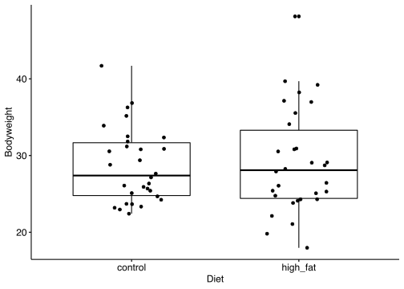
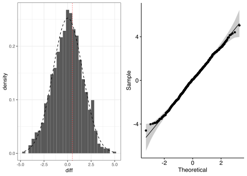
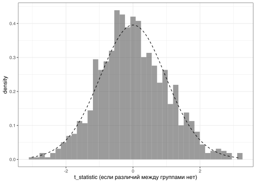
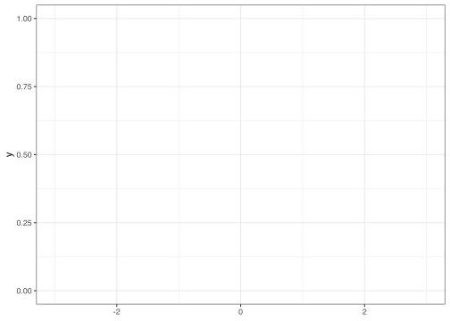
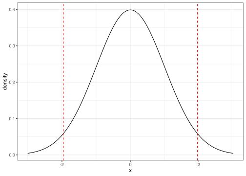
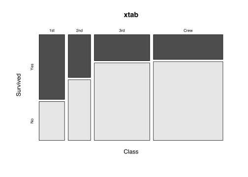
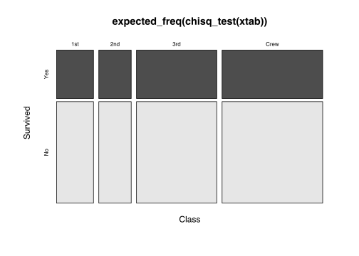
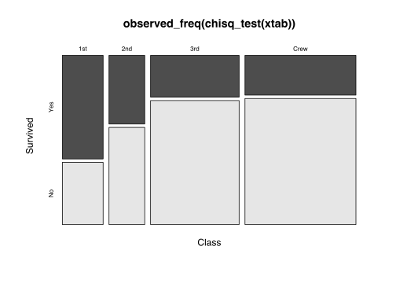

Fresh start: мы ничего не значем про распределение в группах, просто пытаемся понять, есть ли различия в средних значениях или нет.
library(tidyverse)## ── Attaching packages ──────────────────────────────────────────────────────── tidyverse 1.2.1 ──## ✔ ggplot2 3.2.1 ✔ purrr 0.3.2
## ✔ tibble 2.1.3 ✔ dplyr 0.8.3
## ✔ tidyr 1.0.0 ✔ stringr 1.4.0
## ✔ readr 1.3.1 ✔ forcats 0.4.0## ── Conflicts ─────────────────────────────────────────────────────────── tidyverse_conflicts() ──
## ✖ dplyr::filter() masks stats::filter()
## ✖ dplyr::lag() masks stats::lag()library(magrittr)##
## Attaching package: 'magrittr'## The following object is masked from 'package:purrr':
##
## set_names## The following object is masked from 'package:tidyr':
##
## extractlibrary(ggpubr)
library(cowplot)##
## ********************************************************## Note: As of version 1.0.0, cowplot does not change the## default ggplot2 theme anymore. To recover the previous## behavior, execute:
## theme_set(theme_cowplot())## ********************************************************##
## Attaching package: 'cowplot'## The following object is masked from 'package:ggpubr':
##
## get_legendlibrary(rstatix)##
## Attaching package: 'rstatix'## The following object is masked from 'package:stats':
##
## filtertheme_set(theme_bw())
# данные, с которыми будем работать
# download.file("https://raw.githubusercontent.com/genomicsclass/dagdata/master/inst/extdata/mice_pheno.csv", "data/mice_pheno.csv")
mice_pheno = rio::import("../data/mice_pheno.csv") %>% as_tibble()
mice_pheno =
mice_pheno %>%
mutate(Diet = recode(Diet,"hf" = "high_fat", "chow" = "control")) %>%
mutate_if(is.character, as.factor)
# создадим подвыборку размером по 30 наблюдений в каждой группе
set.seed(1)
mice_pheno_30 = mice_pheno %>% sample_n_by(Diet, size=30) # rstatix
# смотрим на данные
mice_pheno_30 %>% ggboxplot("Diet", "Bodyweight", add="jitter") # ggpubr
У нас есть две гипотезы
Чтобы понять, есть ли разница, нужно придумать какой-то показатель \(D\), характеризующий эту разницу, затем провести исследование на предмет того, какие значения он может принимать, если его считать для случайно выбранных групп наблюдений. Затем мы можем сравнить эти типичные значения \(D\) со значением \(D\), для искомых групп и оценить насколько вероятно такое значение среди групп из одной генеральной совокупности.
get_diff = function(data, shuffle = F){
if (shuffle) data = data %>% mutate(Diet = sample(Diet))
data %>%
group_by(Diet) %>%
summarise(mean = mean(Bodyweight)) %>% # среднее в каждой группе
pull(mean) %>% # превращаем колонку в вектор
diff() # считаем среднее между двумя значениями
}
actual_diff = get_diff(mice_pheno_30, shuffle = F)
# создаем случайные группы из наблюдений и считаем среднее
N = 1000 # число симуляций
set.seed(1)
tibble(run = 1:N) %>%
group_by(run) %>%
summarise(diff = get_diff(mice_pheno_30, shuffle = T)) -> mice_pheno_30_h0
h =
mice_pheno_30_h0 %>%
#gghistogram("diff", color = NA, fill = "gray") +
ggplot() +
geom_histogram(aes(x=diff, y = ..density..)) +
geom_vline(xintercept = actual_diff, col = "red", linetype = "dotted") +
stat_function(fun = dnorm, n = 101, args = list(mean = mean(mice_pheno_30_h0$diff), sd = sd(mice_pheno_30_h0$diff)), col="black", linetype="dashed")
qq = mice_pheno_30_h0 %>% ggqqplot("diff")
plot_grid(h, qq)## `stat_bin()` using `bins = 30`. Pick better value with `binwidth`.
Итак, мы можем увидеть, что если различий между группами нет и найденное нами деление на группы ничем не лучше любого другого, случайно сгенерированного, то найденная разница actual_diff “затеряется” среди типичных разниц diff случайных различий. В данном случае так и произошло.
mice_pheno_30_h0 %>%
pull(diff) %>% # берем вектор значений
{abs(.) > actual_diff} %>% # число случаев, когда абсолютные значения статистики, больше чем наблюдаемое
{sum(.)/length(.)} # доля таких случаев## [1] 0.741Мы видим, что среди случайно сгенеренных случайных групп 74% имеют даже большие различия, чем между группами, которые мы сравниваем!
P-value - вероятность получить для данной вероятностной модели распределения значений случайной величины такое же или более экстремальное значение статистики (среднего арифметического, медианы и др.), по сравнению с ранее наблюдаемым, при условии, что нулевая гипотеза верна.
В данном случае, статистика - это показатель \(D\), которым мы меряем различие между группами, а 0.74 (74%) - это p-value, т.е. доля значений статистики \(D\), которая принимает такое же или более экстримальное значение из набора сгенерированных значений для случайных групп (т.е. для которых нулевая гипотеза о равенстве средних верна).
Кстати, в R уже реализована функция для такого теста, поэтому его не надо изобретать самому.
mice_pheno_30 %>% coin::oneway_test(Bodyweight ~ Diet, data = .)##
## Asymptotic Two-Sample Fisher-Pitman Permutation Test
##
## data: Bodyweight by Diet (control, high_fat)
## Z = -0.33284, p-value = 0.7393
## alternative hypothesis: true mu is not equal to 0# p-value можно достать так
mice_pheno_30 %>% coin::oneway_test(Bodyweight ~ Diet, data = .) %>% coin::pvalue()## [1] 0.7392563Если мы возьмем другую выборку или больше данных (например, ~ 400 наблюдений в каждой группе), то можем увидеть другую картину.
set.seed())Мы хотим узнать, есть ли разница между группами, для которых предпосылка о нормальности распределения неверна, мы также можем использовать тест Манна-Уитни.
mice_pheno_30 %>%
wilcox_test(Bodyweight ~ Diet)## # A tibble: 1 x 7
## .y. group1 group2 n1 n2 statistic p
## * <chr> <chr> <chr> <int> <int> <dbl> <dbl>
## 1 Bodyweight control high_fat 30 30 445 0.947Наконец, если мы уверены, что распределение данных нормально, то можно использовать параметрические тесты, например t-тест. Заметим, кстати, что в данных группах дисперсия отличается. Однако t-тест умеет делать поправку на это.
\[ t = \frac{\bar{x}_1 - \bar{x}_2}{SE_{pooled}} = \frac{\bar{x}_1 - \bar{x}_2}{\sqrt{var_{pooled}} \cdot \sqrt{\frac{1}{n_1}+\frac{1}{n_2}}} = \frac{\bar{x}_1 - \bar{x}_2}{\sqrt{\frac{var_1 \cdot (n_1-1)+var_2 \cdot (n_2-1)}{(n_1-1)+(n_2-1)}} \cdot \sqrt{\frac{1}{n_1}+\frac{1}{n_2}}} \] Попытаемся это посчитать
# считаем среднее, дисперсию и размер выборки для групп
mice_pheno_30_summary =
mice_pheno_30 %>%
group_by(Diet) %>%
summarise(mean = mean(Bodyweight),
var = var(Bodyweight),
n = n())
# разница между групповыми средними (числитель)
group_diff =
mice_pheno_30_summary %>%
pull(mean) %>%
diff()
# теперь знаменатель (поэтапно)
# 1. pooled var
pooled_var =
with(mice_pheno_30_summary, # with чтобы вытаскивать переменные из mice_pheno_30_summary
(var[1]*(n[1]-1) + var[2]*(n[2]-1)) / ((n[1]-1) + (n[2]-1)))
# 2. pooled se
pooled_se =
with(mice_pheno_30_summary,
sqrt(pooled_var) * sqrt(1/n[1] + 1/n[1]))
# все целиком
t_statistic = group_diff / pooled_se
t_statistic## [1] 0.3303159# тоже самое - готовой функцией
mice_pheno_30 %>%
t_test(Bodyweight ~ Diet)## # A tibble: 1 x 8
## .y. group1 group2 n1 n2 statistic df p
## * <chr> <chr> <chr> <int> <int> <dbl> <dbl> <dbl>
## 1 Bodyweight control high_fat 30 30 -0.330 52.4 0.742# проводим симуляцию как себя ведет t-значение, если различий нет
# (как в тесте перестановок, но другая статистка)
t_statistic_null =
tibble(run = 1:1000) %>%
group_by(run) %>%
mutate(t =
mice_pheno_30 %>%
mutate(Diet = sample(Diet)) %>%
t_test(Bodyweight ~ Diet) %>%
pull(statistic))
# строим график
# если данные (а точнее остатки) распределены нормально,
# то t_statistic ~ t(df) и можно по из этого вычислить p-value
t_statistic_null %>%
ggplot() +
geom_histogram(aes(x = t, y = ..density..), alpha = .6, bins = 40) +
stat_function(fun = dt, args = list(df = 30), linetype = "dashed") +
labs(x = "t_statistic (если различий между группами нет)")
Доверительный интервал — это интервал, построенный с помощью случайной выборки из распределения с неизвестным параметром, такой, что он содержит данный параметр с заданной вероятностью.
Нормальный интервал
\[ \Big[mean(x) - z^* \cdot \frac{sd(x)}{\sqrt{n}},\ mean(x) + z^* \cdot \frac{sd(x)}{\sqrt{n}}\Big] \]
# z*
qnorm(0.975)## [1] 1.959964ggplot() +
stat_function(fun = dnorm, args = list(mean = 0, sd = 1)) + xlim(-3,3) + ylim(0, 1)
ggplot(data = data.frame(x = c(-3, 3)), aes(x)) +
stat_function(fun = dnorm, n = 101, args = list(mean = 0, sd = 1)) + ylab("density") +
#scale_y_continuous(breaks = NULL) +
geom_vline(xintercept = qnorm(c(0.025, 0.975)), col = "red", linetype = "dashed")
# normal CI
set.seed(1)
x = rnorm(100, mean = 50, sd = 8)
mean(x) + qnorm(c(0.025, 0.975)) * sd(x) / sqrt(length(x))## [1] 49.46275 52.27945t интервал => используется по умолчанию!
\[ \Big[mean(x) - t^* \cdot \frac{sd(x)}{\sqrt{n}},\ mean(x) + t^* \cdot \frac{sd(x)}{\sqrt{n}}\Big] \]
qt(0.975, df = 10)## [1] 2.228139set.seed(1)
x = rnorm(10, mean = 50, sd = 8)
mean(x) + qnorm(c(0.025, 0.975)) * sd(x) / sqrt(length(x)) # z*: qnorm## [1] 47.18720 54.92805mean(x) - qnorm(c(0.975)) * sd(x) / sqrt(length(x)) # z*: qnorm## [1] 47.1872mean(x) + qnorm(c(0.975)) * sd(x) / sqrt(length(x)) # z*: qnorm## [1] 54.92805mean(x) + qt(c(0.025, 0.975), df = 10) * sd(x) / sqrt(length(x)) # t*: qt## [1] 46.65762 55.45763t.test(x, mu = 0) # base R##
## One Sample t-test
##
## data: x
## t = 25.855, df = 9, p-value = 9.336e-10
## alternative hypothesis: true mean is not equal to 0
## 95 percent confidence interval:
## 46.59044 55.52480
## sample estimates:
## mean of x
## 51.05762mean_ci(x) # ggpubr## y ymin ymax
## 1 51.05762 46.59044 55.5248# Data: Titanic
xtab <- as.table(rbind(
c(203, 118, 178, 212),
c(122, 167, 528, 673)
))
dimnames(xtab) <- list(
Survived = c("Yes", "No"),
Class = c("1st", "2nd", "3rd", "Crew")
)
xtab = t(xtab)
# visual
mosaicplot(xtab, color = T)
chisq_test(xtab)## # A tibble: 1 x 5
## statistic p df method p.signif
## * <dbl> <dbl> <int> <chr> <chr>
## 1 190. 5.00e-41 3 Chi-square test ****chisq_test(t(xtab))## # A tibble: 1 x 5
## statistic p df method p.signif
## * <dbl> <dbl> <int> <chr> <chr>
## 1 190. 5.00e-41 3 Chi-square test ****expected_freq(chisq_test(xtab))## Survived
## Class Yes No
## 1st 104.98637 220.0136
## 2nd 92.06497 192.9350
## 3rd 228.06270 477.9373
## Crew 285.88596 599.1140mosaicplot(expected_freq(chisq_test(xtab)), color = T)
observed_freq(chisq_test(xtab))## Survived
## Class Yes No
## 1st 203 122
## 2nd 118 167
## 3rd 178 528
## Crew 212 673mosaicplot(observed_freq(chisq_test(xtab)), color = T)
chisq_descriptives(chisq_test(xtab))## # A tibble: 8 x 9
## Class Survived observed prop row.prop col.prop expected residuals
## <fct> <fct> <dbl> <dbl> <dbl> <dbl> <dbl> <dbl>
## 1 1st Yes 203 0.0922 0.625 0.286 105. 9.57
## 2 2nd Yes 118 0.0536 0.414 0.166 92.1 2.70
## 3 3rd Yes 178 0.0809 0.252 0.250 228. -3.32
## 4 Crew Yes 212 0.0963 0.240 0.298 286. -4.37
## 5 1st No 122 0.0554 0.375 0.0819 220. -6.61
## 6 2nd No 167 0.0759 0.586 0.112 193. -1.87
## 7 3rd No 528 0.240 0.748 0.354 478. 2.29
## 8 Crew No 673 0.306 0.760 0.452 599. 3.02
## # … with 1 more variable: stdres <dbl>prop_test(xtab)## # A tibble: 1 x 4
## statistic df p p.signif
## <dbl> <dbl> <dbl> <chr>
## 1 190. 3 5.00e-41 ****pairwise_prop_test(xtab)## # A tibble: 6 x 5
## group1 group2 p p.adj p.adj.signif
## * <chr> <chr> <dbl> <dbl> <chr>
## 1 1st 2nd 3.13e- 7 9.38e- 7 ****
## 2 1st 3rd 2.55e-30 1.27e-29 ****
## 3 1st Crew 1.62e-35 9.73e-35 ****
## 4 2nd 3rd 6.90e- 7 1.38e- 6 ****
## 5 2nd Crew 1.94e- 8 7.75e- 8 ****
## 6 3rd Crew 6.03e- 1 6.03e- 1 nsfisher_test(xtab, simulate.p.value = T)## # A tibble: 1 x 2
## p p.signif
## <dbl> <chr>
## 1 0.0005 ***Мощность непараметрических тестов
# hometask: wilcoxon test power calculation
n = 30
set.seed(1)
data = tibble(
groups = rep(c("Sample1", "Sample2"), each = n),
values = c(
MASS::rnegbin(n, 20, 1.5),
MASS::rnegbin(n, 30, 1.5)
)
)
data %>%
ggplot(aes(x = groups, y = values)) +
geom_boxplot() +
geom_point(position = position_jitter(.1), size=2, alpha=.6)
library(coin)
# реализация теста перестановок, разобранного на уроке
oneway_test(values ~ as.factor(groups), data)
data %>%
group_by(groups) %>%
summarise(mean = mean(values), var = var(values))
sample_sizes = c(3, 10, 20, 30, 50, 80, 100, 150, 200, 300)
res =
matrix(NA, nrow = 1000, ncol = 10)
dimnames(res) =
list(sample_n = 1:1000,
sample_size = sample_sizes)
for (n in 1:1000){
for (ss in sample_sizes){
res[n, as.character(ss)] =
tibble(
groups = rep(c("Sample1", "Sample2"), each = ss),
values = c(
MASS::rnegbin(ss, 20, 1.5),
MASS::rnegbin(ss, 30, 1.5)
)
) %>% oneway_test(values ~ as.factor(groups), data = .) %>% pvalue()
}
}
mean(data$values)
var(data$values)
# var = mu + mu^2 / theta => theta = mu^2 / (var - mu)
mean(data$values)^2 / (var(data$values) - mean(data$values)) # theta
# simulations
n_sim = 4
runs = 1:n_sim
sample_sizes = c(3, 10, 20, 30, 50, 80, 100, 150, 200, 300)
expand_grid(
run = runs,
sample_size = sample_sizes
) -> simulation_design
sim_comparison = function(sample_size){
tibble(
groups = rep(c(1, 2), each = sample_size),
values = c(
MASS::rnegbin(sample_size, 20, 1.5),
MASS::rnegbin(sample_size, 30, 1.5)
)
) %>%
oneway_test(values ~ as.factor(groups), data = .) %>%
pvalue() %>%
{. < 0.05}
}
simulation_design %>%
group_by(run, sample_size) %>%
mutate(comparison = sim_comparison(sample_size)) -> comparisons
comparisons %>%
group_by(sample_size) %>%
summarise(n = n(),
n_positive = sum(comparison),
positive_rate = n_positive/n)# если отличия есть, межгрупповые отличия больше внутригрупповых
aov
anova + lm
car::Anova
anova_test
anova_summary